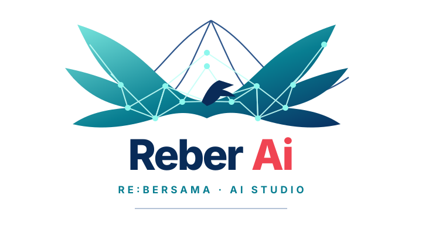

STATUS MESIN AI
Mesin & Runtime
Memeriksa runtime…Status koneksi backend dan mesin lokal
Model terdeteksi—
GPUTidak diketahui
Memori browserTidak tersedia
Uptime sesi—
Runtime browserMemuat…

AI REBERALLUNIVERS_OS · LOCAL CHAT ENGINEAI CAPABILITY CENTER / REBER
Akses cepat ke alat yang sudah tersedia di aireber/. Setiap kartu membuka menu kerja yang sesuai; fitur lokal tidak diklaim sebagai model cloud.
AIREBER / AI OPERATIONS CENTER
AIREBER — Platform AI terpadu untuk produktivitas, pengelolaan data, dan orkestrasi alur kerja.
Ruang kerja terpadu untuk percakapan, pengelolaan data, eksperimen model, dan pengembangan sistem AI.
AI STUDIO / LOCAL PROMPT DESK
Prompt disimpan sebagai file di Workspace File Manager. Tidak dikirim ke model dan tidak ada jawaban AI yang disimulasikan.
aireber/prompts/. Isinya tidak diunggah ke GitHub. GitHub Pages tidak menjalankan endpoint API/AI dari source arsip.CHATBOT REALTIME / MESIN AI REBER
Chatbot realtime yang mengolah mesin sistem AI Reber: pipeline tokenisasi → retrieval mesin kata AlluniverS_OS → ranking → perangkaian jawaban → sitasi referensi/link acuan. Menjawab pertanyaan jenis apa pun, bisa membuat kode, dan memberikan analisis mendalam untuk permasalahan tertentu — tanpa token API, tanpa kredit, tanpa batas panjang percakapan.
Untuk model generatif, deploy folder aireber/ ke Netlify dan masukkan kode akses gateway. Kode hanya disimpan di memori halaman ini.
VIRTUAL FILE SYSTEM / 01
Pohon virtual dari source Reber ditelusuri bertahap; perubahan pribadi disimpan di Workspace lokal, bukan ke source publik.
—Tidak ada kode yang dieksekusi.
aireber/workspace/ pada File Manager utama. Kapasitas mengikuti kuota browser/perangkat dan tidak tersinkron antarperangkat.PROJECTS / LOCAL REGISTRY
Daftar proyek lokal dan template file. Domain di bawah hanya usulan nama, bukan domain yang telah didaftarkan.
AI FEATURE WORKSPACE / 50 × 3
Masukkan teks atau konteks, pilih salah satu tindakan, lalu lihat hasil pemrosesan lokal. Kemampuan generatif berbasis model memerlukan backend AI yang terhubung.
Pilih salah satu tindakan.
SOURCE ARCHIVE / READ-ONLY
Semua file source yang terlacak pada commit sumber tercatat di manifest. Source text disimpan dengan suffix .source.txt agar GitHub Pages tidak mengeksekusinya.
AI ENGINE / ROBOTICS DEVELOPMENT
Atur kebijakan respons, sumber pengetahuan PlanetBintang, dan spesifikasi pengembangan mesin robotik AI. Pengaturan disimpan pada perangkat ini.
Kunci API tetap berada di environment server, bukan di browser. Model generatif memerlukan backend aktif. Pengaturan ini membatasi instruksi dan alur retrieval, bukan menghapus pengetahuan bawaan model provider.
Konfigurasi belum dimuat.